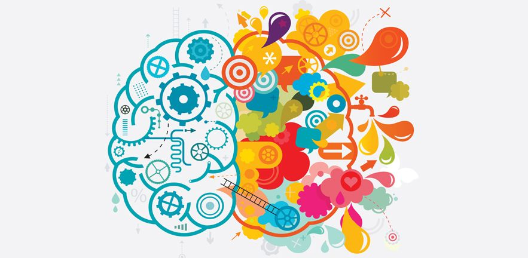
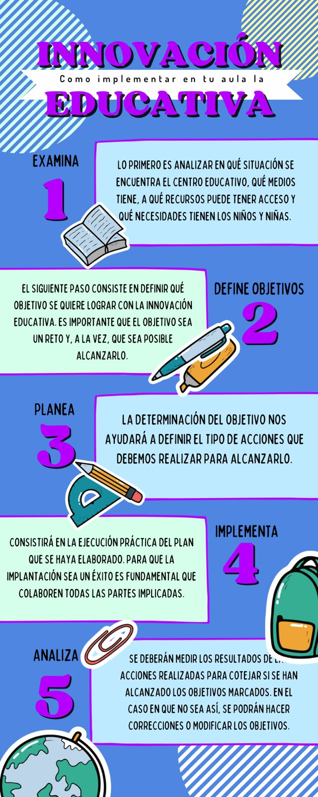
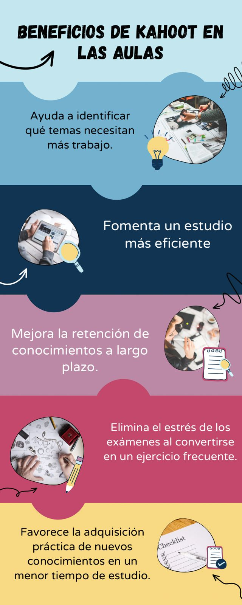
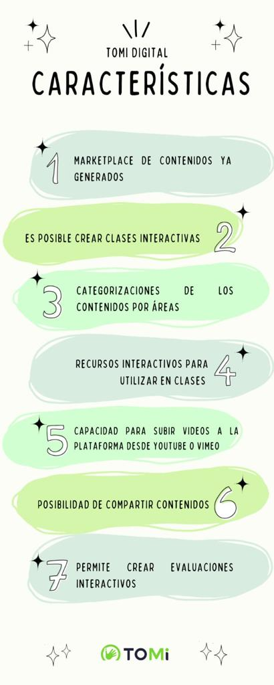
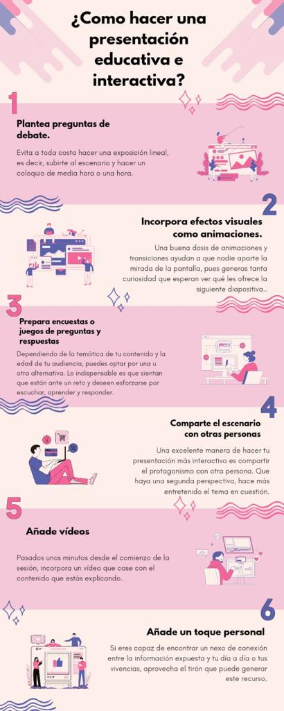
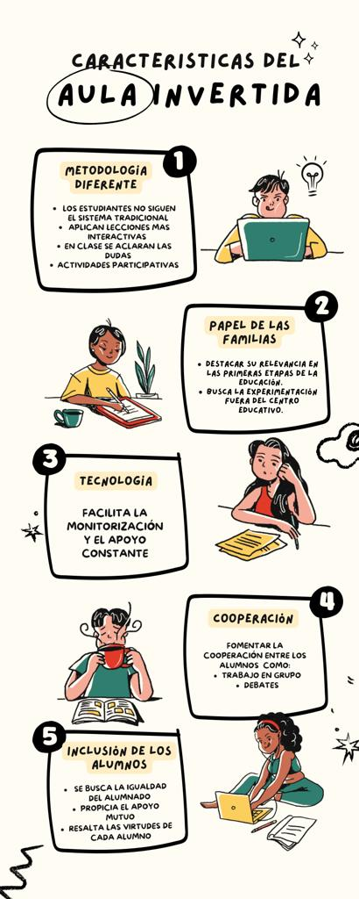
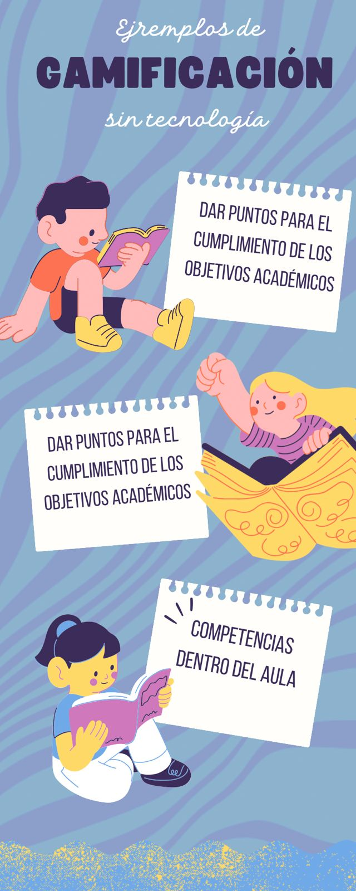

Innovacion Educativa

¡Hola! Te saludamos, somos NOVA un microcurso dirigido a docentes con el objetivo de promover la reflexión sobre la integración de las tendencias pedagógicas y/o herramientas educativas.
En nuestro microcurso encontraras tutoriales sobre aplicaciones que puedes empezar a incluir en tus clases, además de otras tácticas que no requieren de tecnología. Este microcurso es completamente gratuito porque deseamos que todos los docentes tengan la oportunidad de conocer estos métodos para poder aplicarlos en sus aulas y así mejorar su desempeño y el de los alumnos.
Estamos emocionados de contar con su presencia en este viaje educativo que busca desencadenar una revolución en la forma de enseñanza y aprendizaje.
Al final de este microcurso, no solo habrán adquirido conocimientos y habilidades, sino que también estarán listos para aplicarlos y transformar sus aulas en espacios de aprendizaje innovadores y significativos.
Prepárense para explorar, crear y cuestionar. Juntos, daremos forma al futuro de la educación y caminar hacia una experiencia educativa excepcional.
Contenido del Curso
2 Horas
6 Modulos
6 Evaluaciones

Innovación: Es un proceso que implica un cambio en la enseñanza y se basa en cuatro elementos fundamentales: las personas, el conocimiento, los procesos y la tecnología. Si no se consideran los cuatro elementos conjuntamente es probable que la innovación educativa no tenga el éxito esperado.
Tendencias
En la innovación educativa podemos diferenciar varias tendencias, entre las que podemos destacar las siguientes:
Gamificación. No hay nada mejor que aprender jugando. La gamificación consiste en utilizar juegos para enseñar y potenciar la motivación de los alumnos. De esta forma se logra que el aprendizaje sea una experiencia positiva y motivadora. Se pueden, por ejemplo, establecer retos para los niños y niñas, con premios o puntuaciones para lograr una recompensa. También se pueden utilizar videojuegos con fines pedagógicos.
Pedagogía inversa. Tal y como decíamos antes, uno de los factores más importantes de la innovación educativa es el cambio de roles de profesores y alumnos de manera que estos últimos participen de forma activa en su propio proceso de aprendizaje. Por una parte, algunos ejercicios que anteriormente se realizaban en clase se pueden hacer en casa con soportes audiovisuales y, por otro lado, en clase se pueden plantear retos que los alumnos deban trabajar en grupo o individualmente para aprender.

Kahoot:
Kahoot! es una plataforma basada en juegos de preguntas que se aloja en la nube; ideal para fomentar el aprendizaje online. La plataforma permite crear cuestionarios desde cero, lo que posibilita las opciones de aprendizaje creativas hechas a medida y lo convierte en una herramienta muy útil para la enseñanza virtual.
Una de las principales ventajas, y por la que está adquiriendo cada vez más popularidad en las aulas virtuales, es que Kahoot es gratuito. Solo es necesario crear una cuenta y tener conexión a internet para empezar a utilizarlo. Además, su diseño responsive permite su uso en la mayoría de los dispositivos, incluidos ordenadores, tablets y smartphones, con versiones disponibles tanto para iOS, Android o web.
Tipos de Preguntas
Quiz
Verdadero o falso
Respuesta corta (disponible en algunos planes)
Puzzle (disponible en algunos planes)
Quiz + Audio (disponible en algunos planes)
Control deslizante (disponible en algunos planes)
Recopilación de opiniones
Encuesta (disponible en algunos planes)
Nube de palabras (disponible en algunos planes)
Pregunta abierta (disponible en algunos planes)
Lluvia de ideas (disponible en algunos planes)
Coloca el pin (disponible en algunos planes)
Añadir diapositivas
Diapositiva (disponible en algunos planes)

Es una aplicación que permite a los Maestros crear clases interactivas y motivadoras, para usar con sus alumnos en forma presencial o remota, con o sin internet y que además cuenta con un módulo de Gestión Áulica.
Para Crear las clases el Docente cuenta con una gran cantidad de Herramientas como ser Encuestas, Tormentas de Ideas Digitales, Participación Aleatoria y elementos para crear Desafíos Gamificados super atrapantes.
Ventajas:
Entre las principales ventajas de Tomi Digital tenemos:
Toda la infraestructura base que brinda es gratuita.
Es una plataforma muy fácil de utilizar y con una interfaz muy moderna
También ofrece la posibilidad de tomar materiales de otros profesores para tenerlos como base para dar clases a nuestros alumnos

Pear Deck para Google Slides es un complemento que agrega evaluaciones formativas y preguntas interactivas a tus presentaciones, todo directamente desde Google Slides. Hace que tus clases sean más atractivas con evaluaciones formativas, como timbres, controles de comprensión, boletos de salida y más. Agrega audio a tus presentaciones, ve las respuestas de tus alumnos e invita a otros profesores a tus sesiones.
Aplicación en la educación
Facilita mantener la atención de los estudiantes, y profundiza en el aprendizaje con sus funciones interactivas.
Funcionalidades
Interacción con estudiantes en tiempo real
Agrega audio, timbres, controles de comprensión, boletos de salida y más a tus presentaciones
Crea preguntas personalizadas, usando texto, respuesta de número, opción múltiple, o diapositiva web
Ventajas
Fácil de usar
Revisa la comprensión de los estudiantes
Agrega interactividad a las presentaciones
Presentación Interactiva
Las presentaciones interactivas incluyen elementos clicables que permiten a las personas sentir que tienen protagonismo a través de la participación. Con una presentación interactiva no transmites información, sino que proporcionas una experiencia.
Una presentación interactiva es, una información presentada a través de medios digitales incorporando elementos que permiten interactuar entre el contenido y la persona que realiza la acción de forma activa.
Una presentación interactiva es aquella que tiene algunos elementos de contenido con los que puedes interactuar: zonas sensibles, navegación, cuadros emergentes, etc. Esta función ayuda a captar la atención de la audiencia y mejora la participación de los estudiantes.
Pear Deck. Presentaciones interactivas - INTEF
Pear Deck permite al profesorado crear clases interactivas, ya sea mediante presentaciones de Google con preguntas incorporadas, o bien utilizando la fábrica de vocabulario para crear flashcards propias. Hay que registrarse para usar la herramienta, pero es gratuita.
Es una plataforma de participación estudiantil basada en la nube que permite a las escuelas organizar clases sincrónicas y asincrónicas para estudiantes remotos, mejorar las discusiones grupales y realizar un seguimiento de la participación en tiempo real.

¿Que es la clase invertida?
La clase invertida o aula invertida es una metodología educativa disruptiva que cuestiona los métodos tradicionales al intercambiar los roles entre docentes y alumnos.
Por un lado, el docente se convierte en acompañante de los alumnos. Para ello, se le demanda que proponga temas de debate, reformule y resuelva dudas o busque nuevos modos de aprendizaje atractivos y no tan tradicionales.
Por el otro, los alumnos son los que dirigen la formación en la clase invertida mediante preguntas y la generación de debates o propuestas de aprendizaje. De este modo, se pone el foco en los intereses más habituales del alumnado, lo que fomenta la motivación, la participación y la cooperación entre ellos para resolver dudas comunes.
La tecnología, una herramienta clave en el modelo Flipped Classroom
El aula invertida fomenta la digitalización de la educación, ya que la tecnología facilita la monitorización y el apoyo constante, dos elementos clave de esta metodología. De hecho, las herramientas colaborativas entre docentes y alumnado son muy comunes en el modelo de la clase invertida.
Metodologías combinables con la clase invertida
Una de las cuestiones que hace más atractiva la implementación de la clase invertida es la posibilidad de combinarla con otras metodologías que pueden convivir con este sistema educativo. En este sentido, el juego es elemento importante en la flipped classroom y el e-learning se convierte en una parte esencial de la formación en estos entornos.
Gamificación
La gamificación es un método que consiste en utilizar juegos con la intención de aprender. Por ejemplo, en la formación de adultos es muy común recurrir a juegos de tipo test, de recompensas, de trabajo en equipo o, incluso, de creatividad. Y es que se ha comprobado que los resultados del aprendizaje son mucho mayores cuando el proceso se hace más ameno.
E-learning
Como hemos señalado, la tecnología es una parte indispensable en la clase invertida. Teniendo esto en cuenta, el aprendizaje a través de estos medios online resulta esencial para que los alumnos puedan seguir con su formación una vez que se encuentran en casa.

Que es la gamificación
Es una técnica de aprendizaje que traslada la mecánica de los juegos al ámbito educativo-profesional con el fin de conseguir mejores resultados, ya sea para absorber mejor algunos conocimientos, mejorar alguna habilidad, o bien recompensar acciones concretas, entre otros muchos objetivos.
Estos son 10 consejos para incorporar experiencias de gamificación e impulsar el aprendizaje con tus alumnos.
1. Explora herramientas de gamificación
2. Establece un sistema de juego, niveles y recompensas
3. Incluye variedad de juegos
4. Convierte a tus estudiantes en co-diseñadores
5. Permiteles equivocarse y volverlo a
intentar
6. Busca que el progreso sea visible
7. Diseña retos o búsquedas en lugar de tareas y proyectos
8. Crea desafíos para resolver en equipo
9. No olvides dar retroalimentación
10. Sin tecnología también es posible aplicar la gamificación
¿Cuáles son sus objetivos?
El objetivo principal de la gamificación consiste en ofrecer una fuente de aprendizaje motivadora y efectiva para el alumnado. De esta manera, se consigue un mayor compromiso por parte del alumnado en el proceso educativo. También tiene como objetivo optimizar la eficacia y los resultados en la enseñanza y permitir que establezcan una relación con los contenidos de carácter lúdico.
Otro objetivo que define qué es la gamificación es lograr en el alumnado un compromiso, entendido este como el nivel de atención y participación personal que se tiene con una actividad en particular. A través de un juego educativo se consigue llamar más la atención y se interiorizarán más las habilidades y conocimientos aprendidos.